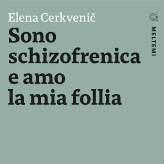

gio 22 ott · dalle 18:00
Presentazione del libro “Sono schizofrenica e amo la mia follia”: incontro con Elena Cerkvenič
Giovedì 22 ottobre 2026, alle ore 18.00, l’Ecomuseo delle Acque del Gemonese, in piazza Municipio 5 a Gemona del Friuli, ospiterà la presentazione del libro “Sono schizofrenica e amo la mia follia” di Elena Cerkvenič. Elena, l’autrice di questo toccante memoir, incontra un…
 Indicazioni
Indicazioni
- Costi e prenotazioni
- Costo non indicato · Prenotazione non indicata
- Programma
- Programma da verificare. Apri la fonte ufficiale per orari e possibili aggiornamenti.
- In caso di maltempo
- Nessuna indicazione specifica pubblicata.
- Note
- Acquisito automaticamente dalla fonte.
L’EVENTO
Descrizione completa
Giovedì 22 ottobre 2026, alle ore 18.00 , l’ Ecomuseo delle Acque del Gemonese , in piazza Municipio 5 a Gemona del Friuli, ospiterà la presentazione del libro “Sono schizofrenica e amo la mia follia” di Elena Cerkvenič .
Elena, l’autrice di questo toccante memoir, incontra un giorno la follia, che piomba nella sua vita come un fulmine a ciel sereno. Schizofrenia: è questa la diagnosi dell’ospedale psichiatrico in cui viene ricoverata. Tornata a Trieste, città in cui è nata, inizia un lungo e profondo viaggio interiore, durante il quale impara a mettere la propria malattia “all’angolo” e ad amarla come parte di sé. Ne scaturiscono pagine pregne di emozioni, un racconto dettagliato in forma di diario che mostra, senza retorica né falsità, che anche quando la follia sembra annichilire tutto c’è ancora spazio per una vita piena in cui poter pronunciare la parola felicità. Sullo sfondo troviamo la Trieste di Franco Basaglia, il genio che ha reso possibile tutto questo.
L’appuntamento si inserisce nelle iniziative di ottobre, mese dedicato alla salute mentale, e propone un’occasione di ascolto e confronto a partire dall’esperienza raccontata dall’autrice. Durante l’incontro sarà possibile dialogare con Elena Cerkvenič e con il dott. Mario Colucci , direttore SOC SPDC Udine-DDSM, approfondendo il valore delle testimonianze personali nel promuovere una maggiore comprensione della salute mentale.
IL PROGRAMMA
Programma e orari
Appuntamenti raccolti dalle fonti elencate. Dove manca un orario, non è ancora disponibile in questa scheda.
Programma pubblicato
- Dal 2026-10-22 al 2026-10-22
INFORMAZIONI UTILI
Prima di partire
- Controllare la fonte prima di partire.
ORGANIZZAZIONE